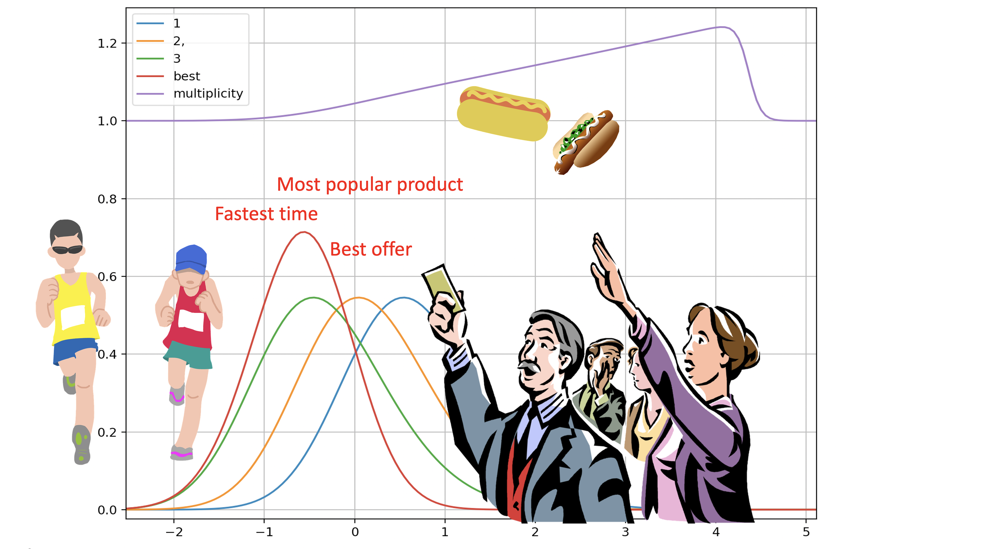

winning
The simplest case for non-Gaussian rating systems.
Rating systems for multi-entrant contests: races, tournaments, leaderboards. Beliefs are whole densities on a lattice, free to be skewed or multimodal; each event updates them with the exact likelihood of the full finish order, computed by an O(N) chain; predictions are exact winner-of-many probabilities, dead-heat aware. Every claim is benchmarked against TrueSkill, OpenSkill, Glicko-2 and Elo on twelve datasets with market ceilings where they exist.

Quick start
from winning import ThurstoneRating
tr = ThurstoneRating()
tr.observe(names=["ada", "ben", "cid", "dot"], ranks=[1, 2, 3, 4])
tr.observe(names=["ada", "cid", "eve"], ranks=[1, 2, 3])
tr.win_probabilities(["ada", "cid", "eve"]) # exact field win probabilities
tr.rating("ada") # Rating(mu=..., sigma=...)
tr.leaderboard() # best-first, conservative
Every system in the package speaks the same three verbs: observe(names,
ranks), win_probabilities(names), rating(name).
That includes the shims around third-party comparators, so a benchmark row is a
one-line swap. Install with pip install winning (core depends only on
thurstone and numpy) or pip install winning[benchmarks] for the
comparators.
Papers
- Rating Formula 1: a case for non-Gaussian noise in rating systems (2026). Seventy-five seasons of grands prix, a retirement-slab noise density, a qualifying control, and a stratified test against historical bookmaker odds.
- Inferring relative ability from winning probability (SIAM, 2021). The lattice algorithm this package grew from: recovering ability densities from a vector of win probabilities, as in pari-mutuel markets.
- Who ya gonna call? and How to respond to an RFQ: the same order statistic in trading, where the best response to a request for quote is a horse race entry.
Heritage
winning 1.x was the reference implementation of the SIAM paper above
and is preserved: the legacy imports still work. The 2.x renovation moved the
numerical core into thurstone
(densities on a lattice, winner-of-many, the ability transform) and made this
package the applications layer, the way
timemachines sits on
skaters: cores are few and
stable; applications multiply, so they get their own package. By Peter Cotton,
with sibling packages at microprediction.
Get the source
github.com/microprediction/winning
·
pip install winning
·
Research scripts